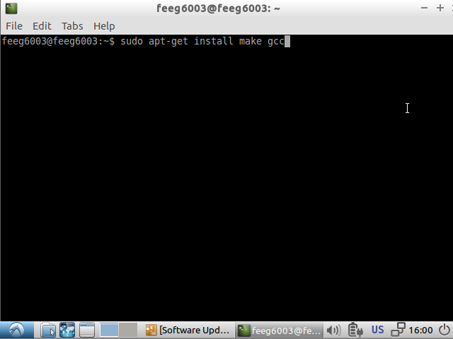
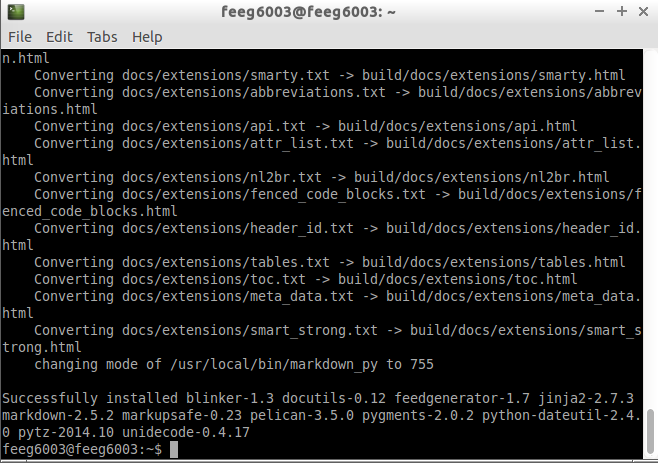

This post provides a step-by-step guide to manually install Pelican on the bare VirtualBox lubuntu image. You probably want to install it on your own machine as well for any serious work. In most cases, this should be easier than for lubuntu. The key is to make sure you have Python 2.x and the python package manager pip available. Then it should be as simple as running
pip install pelican markdown
as root or super-user.
We also use Mercurial as version control software. Please refer to the Mercurial webpage for downloads and installation instructions for your machine. On most Linux systems, it is usually best to trust the package manager and use something like
sudo apt-get install mercurial
Obtain virtual machine
Install VirtualBox on your system (if you have not done so before), download the lubuntu image, and add to VirtualBox. Refer to the VirtualBox post for further guidance on how to setup VirtualBox.
Install make gcc
Make is needed for the guest installations. We also use make with pelican for convenience (more on that later)
sudo apt-get install make gcc

Install Guest additions by injecting the Host Additions CD and run the following command in the cd subdirectory
cd /media/feeg6003/<NAME OF VBOXADDITIONS CD>
sudo ./VBoxLinuxAdditions.run

This should take a minute or two. Reboot the virtual machine after installation of the guest additions.
Installing Pelican
Hint: Make sure that you are not using python 3.

We need to manually install the python package manager on lubuntu as this is not bundled with python prior to version 2.7.9. First obtain the installer script using wget
wget https://bootstrap.pypa.io/get-pip.py
and then install the package manager (pip) as super-user
Finally, once pip is available, pelican (with markdown extension) can be installed
sudo pip install pelican markdown

Installing Mercurial
We use Mercurial as version control software for the blocks post repository.
Use the linux package manager to install mercurial
sudo apt-get install mercurial meld